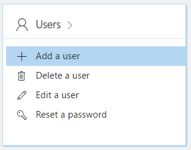

As you can imagine, we have many Power BI internal test environments and all Microsofties get redirected to an internal pre-release version of Power BI so we can test the latest features and provide feedback. It’s great setup, but sometimes I need to just hit app.powerbi.com as a customer would and not be redirected to the internal version. We have a bunch of test users to do so, but I wanted to have a more controlled user directory so I could handout credentials to partners and customers to allow them to test features against app.powerbi.com.
You can set this up for free in Azure by using an Azure Active Directory and then use Office 365 to assign a Power BI Subscription to your users.
Here’s how I got everything setup:
Create Azure Subscription
You are going to need an Azure Subscription to create an Azure Active Directory (AAD) and add users. You can get a free trial here.
Create Azure Active Directory
1. Go to the Azure Portal and create a new Azure Active Directory. AAD pricing information can be found here.

2. Click on the “Click here” link to manage your directory. You will be redirected to the AAD management page.


Add Users
3. Click “Add User” and select “Global Administrator” as the “Directory role”
Make sure you select “Global Administrator”
You will need this account to manage other users in the Office 365 portal.

Make sure you view and save the password for this account. You will need it in a minute.
Purchase Power BI (free) Licenses
4. Open a Browser using “In-Private” or “Incognito” mode.
Make sure the browser is in “In-Private” or “Incognito” mode so you can login with the right account.
5. Go to the Office 365 Admin Portal and login with the Global Administrator account you created earlier.
You will be prompted to change the password.
This is where you will assign the Power BI license to the user you just created.
6. Click Billing -> Subscriptions in the left hand nav.

7. Click the Add Subscriptions button.

8. Find “Power BI (free)” in the list and then click “Buy now”

9. Click “Checkout now”

10. Go through the Checkout process and click “Go to Admin Home” when done.
I selected the “Invoice” option and didn’t have to enter credit card information.


Create Users
If you already have the users created, then click on Users, check the user checkbox and then add the license.
11. Click Users -> Add a user

12. Enter your desired user information and toggle the Power BI license.

13. You will then see that the user was created and you will be given the option to send the password to them via email.

Login to Power BI
14. Go to Power BI and login as that user.
You will now see the Power BI portal and you’ll stay on app.powerbi.com.

Jon